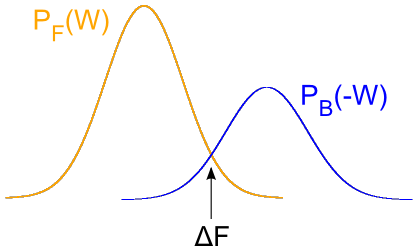

Contact:
mem.fe.2018 [at] uniandes.edu.co
|
|
Overview
|
|

Biological membranes define the boundaries of biological compartments and regulate the transfer of information between the cell and the exterior. The use of computer simulations, in particular molecular dynamics simulations, has enabled monitoring the dynamics of biological membranes in an unprecedentedly broad spatio-temporal range. Moreover, recent methodological advances are pushing the level of complexity further, while increasing the precision and accuracy. Computer simulations have elucidated key aspects of biological membranes and helped us to understand their structure, assembly, composition, activity, and dynamics, among many others.
|

Computer simulations have also been widely used to compute free energies ‒the driving forces of biomolecular processes‒. By incorporating concepts of statistical mechanics into equilibrium and non-equilibrium methods, it has been possible to decipher key processes in biology, including energetics of permeation through membranes, chemo-mechanical energy transduction by molecular motors, biomolecular recognition, ligand-receptor binding affinities, biomolecular thermodynamic stability.
The goal of the school is to bring a selected group of renown scientist to provide the state of the art of computer simulations of biological membranes and of free energy calculations of biomolecular systems. They will illustrate the physico-chemical principles, applications, and challenges of biomembrane simulations and of free energy calculations. Furthermore, the participants will get familiarized with the available packages for computer simulations through hands on sessions. In addition, they will also have the opportunity to present their work in oral and poster contributions. A session will also be dedicated to highlight the recent experimental advances, complementary to the simulations, to study biological membranes.
|